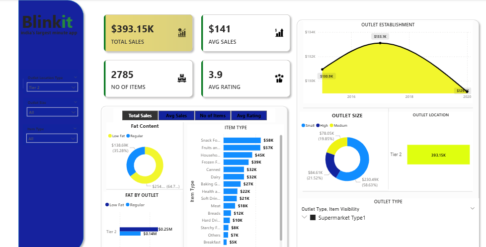

Blinkit operates in the fast-paced quick-commerce domain. Managing sales performance across diverse product categories and multi-tier outlet locations requires clear visibility into customer purchasing patterns, item visibility, and core revenue drivers.
This business intelligence case study processes, cleans, and structures retail metrics to evaluate total revenue, customer satisfaction ratings, and inventory distribution across various store types.
Below is a visual preview of the Power BI executive overview dashboard constructed to evaluate channel sales performance:

Power BI • Excel / Power Query • DAX • Data Modeling